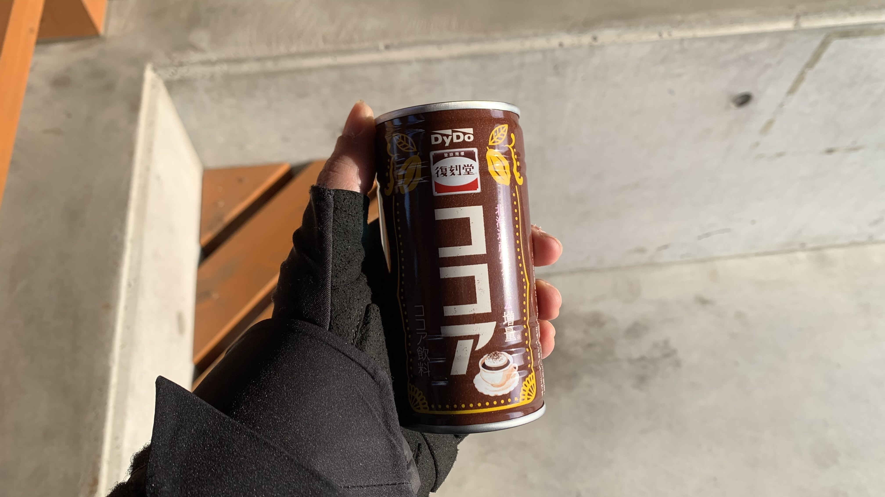
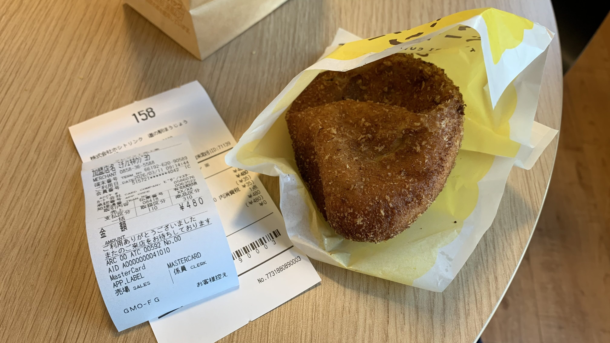
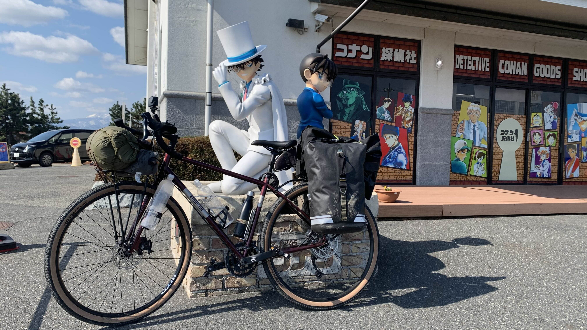
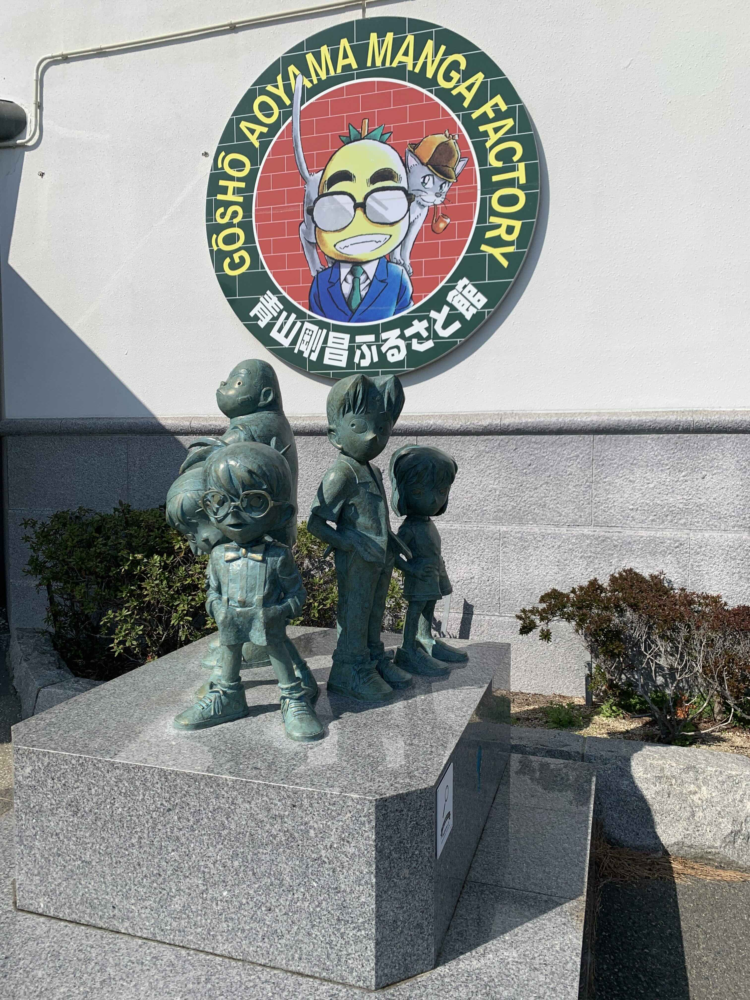
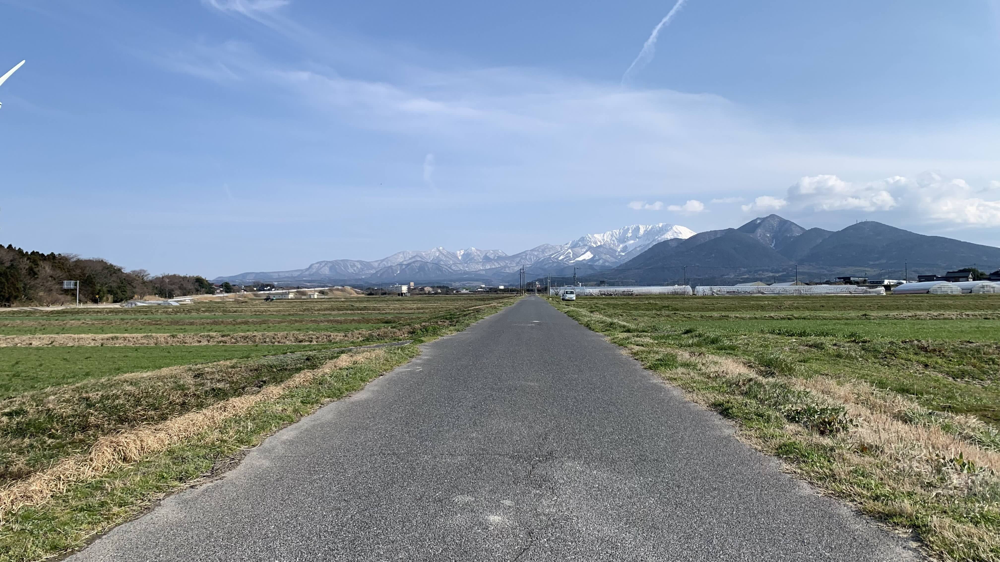

k-Day 007｜神話之國
今天睡到七點，天氣看來相當不錯，可以慢慢收拾裝備。

已經成為販賣機常客，今天選擇沒見過的熱可可。

從昨晚就很飢餓，決定先把最後一綑博多拉麵和野菜煮掉。

這個小角落是吸煙區，不知為何是最溫暖的區域。

熱可可很雞肋，150日圓看起來很便宜，換算成台幣就覺得不要這樣。又買了一瓶午後紅茶。

麵吃完了奶茶還沒喝完，只好再買一個咖喱起司包。超好吃。裡面的起司多到可以承載神明的意志。
這個休息站很棒。店鋪關門後休息室仍然24小時開放。暖氣也不是敷衍的那種，是真正的提供溫暖。

廁所就不用說了。裡面比我的房間還要乾淨豪華。人流量這麼大的狀態，要維持這種潔淨感，絕對是旅客和員工都很珍惜著使用的吧。

離開前拍張照。我給這個休息站100分。

好平和的鄉間小路。沒有風雨沒有雪。

遠方有一座很大的山，一整個早上都在我的左邊陪著我。

出發沒幾分鐘，好像到了青山岡倉紀念館？

雖然不知道柯南到底變回大人了沒，還是要應景合照一下的。

少年偵探團都中年了呢。

這麼風光明媚是可以的嗎？

原來這座積雪的大山就是傳說中的大山。
規劃路線時曾經考慮過從這邊切過來，大概在腦中想像了一秒就覺得不妥。

騎車的時候一直偷空看它，務必把這黑黑藍藍白白的造型帥氣的山留在意識裡。

12點準時抵達道之驛 大山之里。

點了一個豬排丼套餐，1200元。又買了一瓶販賣機奶茶。

就對著山吃了起來。
連醃菜也吃到渣都不剩，超好吃。

發現每個休息站都會賣花。是跟當地的花農合作的嗎？
這兩天都是沿著鳥取自行車道騎車，真的很舒適，設施也很充足。由大山和海景陪伴的騎行，希望市政府多多推廣這條路線。
明天預定要去參觀足立美術館，因此晚上要住在最近的一個道之驛。可以幫手機充電，休息到下午兩點再出發。

騎到一半決定繞路往山的方向騎一段。

這地方有神吧。

開發這條鳥取自行車路線的人，祝你一生平安。

三點多經過這個地方，臭到反胃，又不知道氣味是從哪裡來的。難不成是那個煙囪？
四點剛好抵達休息站。這個地方有露營區，因此決定在這睡一覺，明早去美術館。

買了一把菠菜，搭配昨天的泡麵當晚餐。

是比較小的站點，賣的都是土產。

當我在拍攝這張熊出沒的海報時，我身後有個戴著口罩背著登山包的男性一直對著兩位背對著他，站在電視下方的女性說話，進進出出地就是沒有要離開休息站的打算。
突然此人對著空中大叫一聲。
沒想到在日本遇到世紀難題。如果有熊還會猶豫一下，現在看來此人沒有要離開的意思。
因此立刻訂了一間房，返回三公里外的米子市區。

自行車停在飯店的開放停車場。

超喜歡這個房間。滿滿的昭和味。

房間的燈開關是一把鑰匙：）
所有的按鈕開關都被我玩了一遍才甘願去洗澡。晚上七點準備出門吃飯，回來後要處理日誌上傳的問題。自從離開京都已經一週了，不知為啥一直發不上去。
今日真好。認識了大山好朋友。
今日花費： 熱可可 150、午後紅茶 160、起司咖哩麵包 480、豬排丼飯 1200、奶茶 160、菠菜 110、住宿 3401